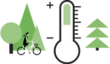

5 claus per a la creació d'entorns urbans saludables
Contaminació de l'aire
Com podem millorar la qualitat de l'aire a les nostres ciutats?
Les ciutats tenen moltes solucions disponibles per reduir la contaminació de l'aire. Es poden aplicar diferents mesures segons les característiques pròpies de cada ciutat. Aquestes són algunes de les línies d'actuació:
- Ciutats per a vianants i ciclistes. Les ciutats fetes per a les persones -amb espais delimitats, zones verdes- permeten desplaçaments més segurs, fàcils, agradables i saludables.
- La reducció del trànsit motoritzat. Les ciutats construïdes principalment al voltant dels viatges en automòbil generen contaminació i fomenten estils de vida poc saludables.
- El transport públic com a columna vertebral. Millorar la xarxa de transport públic i fomentar el seu ús redueix considerablement la contaminació atmosfèrica en disminuir l'ús de vehicles privats i les seves emissions.
Pots consultar les solucions integrals que proposa l'OMS i les que estan impulsant ajuntaments com el de Madrid o Barcelona
Soroll
Com podem reduir el soroll a les nostres ciutats?
La planificació urbana pot tenir un paper important per disminuir els nivells de soroll i promoure estils de vida saludables:
- Les poblacions de més de 100.000 habitants de la Unió Europea han de notificar la contaminació acústica mitjançant mapes de soroll (a Barcelona, per exemple, el mapa també està disponible per a la ciutadania, que pot comprovar el nivell de soroll del seu carrer).
- També s'han de realitzar plans d'acció per reduir el soroll a les zones més afectades. Algunes de les estratègies més freqüents són:
- L'ús de paviment sonoreductor a les calçades
- El límit del volum de trànsit
- La disminució dels límits de velocitat
- La promoció de zones silencioses -per exemple, espais verds
Activitat física
Com podem augmentar el nivell d'activitat física a les ciutats?

El disseny urbà i del transport són claus per augmentar l'activitat física:
- El transport actiu –desplaçar-se a peu o amb bicicleta- en el dia a dia és la forma més pràctica i sostenible d'augmentar l'activitat física.
- Una bona xarxa de transport públic facilita que la ciutadania camini i redueixi l'ús del vehicle privat.
- És important la disponibilitat dels espais verds per realitzar activitat física de forma segura.
Aquestes mesures es recullen en aquest estudi publicat a The Lancet, que analitza l'activitat física en 14 ciutats.
Temperatura
Com podem reduir les illes de calor a les nostres ciutats?
La planificació urbana i del transport ha d'incorporar de forma prioritària la prevenció de l'efecte de les "illes de calor".
- La millora de l'aïllament dels edificis és fonamental per dependre menys de l’aire condicionat.
- El canvi dels materials urbans per altres que absorbeixin menys la radiació solar.
- L'augment de la vegetació urbana fa que hi hagi més ombres i menys temperatura radiant.
- La reducció de la calor que es produeix per activitats humanes (calefacció, etc.) ajudarà també a reduir l'efecte de les illes de calor.
Hi ha diversos plans de mitigació, com la guia ""Reducció de les illes de calor urbanes: Compendi d'estratègies" de l'Agència de Protecció Ambiental dels Estats Units.
Espais naturals
Com s'ha de donar prioritat als espais verds i blaus a les ciutats?
El camí a seguir és la 'renaturalització' de la ciutat i la connexió dels diferents espais naturals urbans:
- Els espais naturals han d'estar distribuïts per tot el municipi perquè els beneficis arribin a tota la ciutadania.
- Zones verdes i blaves connectades entre si. Així es fomenta l'ús d'aquests espais per a desplaçar-se.
- La promoció i millora dels espais naturals existents i, on sigui necessari, habilitar-ne de nous a partir de solars desocupats, teulades, balcons, etc.
- Espais naturals aptes per a diferents usos -relaxació, activitats socials, activitat física, entre d'altres- perquè els beneficis siguin tant per a la salut mental com la física.
- A més, aquests haurien d'estar pensats per a l'ús diferent que els grups de població vagin a donar-los: nens, joves, grans, etc.